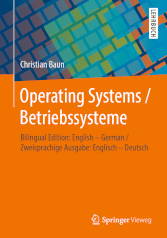

|
|
Wechseln Sie zur Seite in englischer Sprache
|
| 
|
Die Hauptaufgabe eines Betriebssystems ist die Steuerung und Verwaltung der Betriebsmittel eines Rechnersystems sowie die Verteilung dieser Ressourcen an die Benutzer. Zu den Betriebsmitteln gehören Prozessoren, Hauptspeicher, Dateien, Ein-/Ausgabegeräte und Netzwerkdienste und generell alle Ressourcen, die mit dem Rechnersystem verbunden sind. Zusätzlich stellt ein Betriebssystem die Benutzerschnittstelle zur Steuerung des Systems sowie Schutzmechanismen, Werkzeuge, Bibliotheken und Entwicklungswerkzeuge bereit. Das Ziel dieser Vorlesung ist die Vermittlung der Grundlagen, Prinzipien, Probleme, und Lösungen, kurz gesagt der Konzepte auf denen die klassischen und modernen Betriebssysteme basieren. Die komplette Vorlesung (inkl. Übungen und Klausur) findet in englischer Sprache statt. Alle Vorlesungsunterlagen liegen mit identischem Inhalt in deutscher und englischer Sprache vor. Die Betreuung der Übungen geschieht im WS2223 in Zusammenarbeit mit Henry Cocos. Die Vorlesungsunterlagen sind die Grundlage für die 3. Auflage des Buches Betriebssysteme kompakt, das im Juni 2022 bei Springer Vieweg erschienen ist. ISBN: 978-3-662-64717-2 Zusätzlich existiert eine bilinguale (Englisch-Deutsch) Ausgabe - Operating Systems / Betriebssysteme, die im Mai 2020 bei Springer Vieweg erschienen ist. ISBN: 978-3-658-29784-8
|
| Datum | Zeit | Raum | Veranstaltung | Inhalte |
|---|---|---|---|---|
| 18.10.2022 | 14:15-15:45 | Audimax | Vorlesung | Besprechung von Foliensatz 1 + Foliensatz 2 (Folie 1-?) |
| 25.10.2022 | 14:15-15:45 | Audimax | Vorlesung | TBD |
| 01.11.2022 | 14:15-15:45 | Audimax | Vorlesung | TBD |
| 08.11.2022 | 14:15-15:45 | Audimax | Vorlesung | TBD |
| 15.11.2022 | 14:15-15:45 | Audimax | Vorlesung | TBD |
| 22.11.2022 | 14:15-15:45 | Audimax | Vorlesung | TBD |
| 29.11.2022 | 14:15-15:45 | Audimax | Vorlesung | TBD |
| 06.12.2022 | 14:15-15:45 | Audimax | Vorlesung | TBD |
| 13.12.2022 | 14:15-15:45 | Audimax | Vorlesung | TBD |
| 20.12.2022 | 14:15-15:45 | Audimax | Vorlesung | TBD |
| 27.12.2022 | Weihnachtsferien | |||
| 03.01.2023 | Weihnachtsferien | |||
| 10.01.2023 | 14:15-15:45 | Audimax | Vorlesung | TBD |
| 17.01.2023 | 14:15-15:45 | Audimax | Vorlesung | TBD |
| 24.01.2023 | 14:15-15:45 | Audimax | Vorlesung | TBD |
| 31.02.2023 | 14:15-15:45 | Audimax | Vorlesung | TBD |
| 07.02.2023 | 14:15-15:45 | Audimax | Vorlesung | Fragestunde |
| ??.02.2023 | ??? | ??? | Klausur | Die Klausur deckt die Foliensätze 1-? und Übungsblätter 1-? ab |
| Foliensätze | Inhalte | ||
|---|---|---|---|
| Foliensatz 1 | Organisatorisches, Literatur, Generationen von Computersystemen und Betriebssystemen | ||
| Foliensatz 2 | Klassifikationen, Einzelprogrammbetrieb, Mehrprogrammbetrieb, Einzelbenutzerbetrieb, Mehrbenutzerbetrieb, Kernelarchitekturen | ||
| Foliensatz 3 | Von-Neumann-Architektur, Hardware-Komponenten eines Computers, Hauptpropessor, Speicher, Speicherhierarchie, Ersetzungsstrategien | ||
| Foliensatz 4 | Festplatten (HDD), Solid State Drives (SDD), Redundant Array of Independent Disks (RAID) | ||
| Foliensatz 5 | Speicherverwaltung, Real Mode, Protected Mode, virtueller Speicher | ||
| Foliensatz 6 | Dateien, Dateisysteme, Verzeichnisse, Blockadressierung, Journaling, Extents, Defragmentierung | ||
| Foliensatz 7 | Prozesse, Prozesskontext, Zustands-Prozessmodelle, Prozessverwaltung, Prozesse erzeugen und löschen, Systemaufrufe | ||
| Foliensatz 8 | Unterbrechungen, Dispatcher, Scheduling-Verfahren | ||
| Foliensatz 9 | Interprozesskommunikation, Synchronisation von Prozessen, Kommunikation zwischen Prozessen, Kooperation von Prozessen | ||
| Beispiel zu gemeinsamen Speichersegmenten - Shared Memory Segments (System V) | |||
| Beispiel zu gemeinsamen Speichersegmenten - Shared Memory Segments (POSIX) | |||
| Beispiel zu Nachrichtenwarteschlangen - Message Queues (System V) | |||
| Beispiel zu Nachrichtenwarteschlangen - Message Queues (POSIX) | |||
| Beispiel zu anonymen Pipes | |||
| Beispiel zu benannten Pipes | |||
| Beispiel zu TCP-Sockets (Server) | |||
| Beispiel zu TCP-Sockets (Client) | |||
| Beispiel zu UDP-Sockets (Server) | |||
| Beispiel zu UDP-Sockets (Client) | |||
| Beispiel zu Semaphoren (System V) | |||
| Beispiel zu benannten Semaphoren (POSIX) | |||
| Foliensatz 10 | Emulation, Virtualisierung | ||
| Übungsblätter | Inhalte | Lösungen | |||
|---|---|---|---|---|---|
| Übungsblatt 1 | Foliensatz 1 | ||||
| Übungsblatt 2 | Foliensatz 2 | ||||
| Übungsblatt 3 | Foliensatz 3 | ||||
| Übungsblatt 4 | Foliensatz 4 | ||||
| Übungsblatt 5 | Foliensatz 5 | ||||
| Übungsblatt 6 | Foliensatz 6 | ||||
| Übungsblatt 7 | Foliensatz 7 | ||||
| Übungsblatt 8 | Foliensatz 8 | ||||
| Übungsblatt 9 | Foliensatz 9 | ||||
| Übungsblatt 10 | Foliensatz 10 | ||||
Diese Dokumentation reicht nicht aus, um alle praktischen Übungen auf den Übungsblättern zu lösen. Sie ist aber ein guter Einstieg, wenn Sie wenig oder gar kein Vorwissen zu den Themengebieten Linux-Systemadministration und Shell-Programmierung haben. Die Dokumentation selbst ist nicht klausurrelevant, aber die praktischen Übungsaufgaben auf den Übungsblättern sind klausurrelevant.
| Linux und Shell-Programmierung - Teil 1 | Organisatorisches, Einführung, Hilfesystem, Verzeichnisse, Dateien |
| Linux und Shell-Programmierung - Teil 2 | Systemverwaltung, Zugriffsrechte, Verweise, Dateien durchsuchen, Editoren, Prozesse |
| Linux und Shell-Programmierung - Teil 3 | Datum und Uhrzeit, Ein-/Ausgaben umleiten, Zeichen zählen, Alias, Dateien suchen, Kommandos zeitsteuern |
| Linux und Shell-Programmierung - Teil 4 | Ressourcen überwachen, Sortieren, Umgebungsvariablen, Textausgaben, Mustervergleiche, Texte auswerten |
| Linux und Shell-Programmierung - Teil 5 | Grundlagen der Shell und von Shell-Skripten, Vergleichsoperationel, Kontrollstrukturen, Schleifen |
| Linux und Shell-Programmierung - Teil 6 | Arithmetik auswerten, Funktionen, Funktionsbibliotheken, Auswahlmenüs |
| Semester | Klausuren | Bearbeitungszeit | Hochschule | Lösungen | ||
|---|---|---|---|---|---|---|
| WS2122 | 90 Minuten | Frankfurt UAS | ||||
| WS2021 | 90 Minuten | Frankfurt UAS | ||||
| WS1920 | 90 Minuten | Frankfurt UAS | ||||
| SS2019 | 90 Minuten | Frankfurt UAS | ||||
| SS2016 | 90 Minuten | Frankfurt UAS | ||||
| WS1516 | 90 Minuten | Frankfurt UAS | ||||
| SS2015 | 90 Minuten | Frankfurt UAS | ||||
| WS1415 | 90 Minuten | FH Frankfurt | ||||
| SS2014 | 90 Minuten | FH Frankfurt | ||||
| WS1314 | 90 Minuten | FH Frankfurt | ||||
| WS1314 | 60 Minuten | HS Mannheim | ||||
| SS2012 | 90 Minuten | HS Darmstadt | ||||
| SS2011 | 60 Minuten | HS Mannheim | ||||
| SS2009 | 60 Minuten | HS Mannheim | ||||
| WS0809 | 60 Minuten | HS Mannheim | ||||
| SS2008 | 60 Minuten | HS Mannheim | ||||
| WS0708 | 60 Minuten | HS Mannheim | ||||
| SS2007 | 70 Minuten | HS Mannheim | ||||
Zu erreichen bin ich am besten per E-Mail: christianbaun@fb2.fra-uas.de
|
Prof. Dr. Christian Baun Frankfurt University of Applied Sciences (1971-2014: Fachhochschule Frankfurt am Main) FB 2: Informatik und Ingenieurwissenschaften Stand: 22.9.2022 |
|